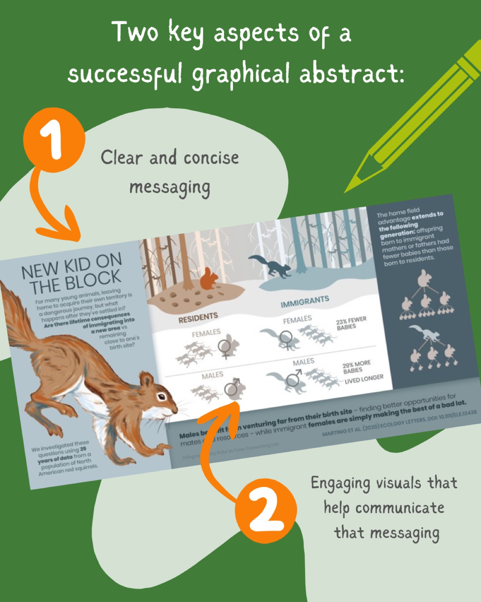
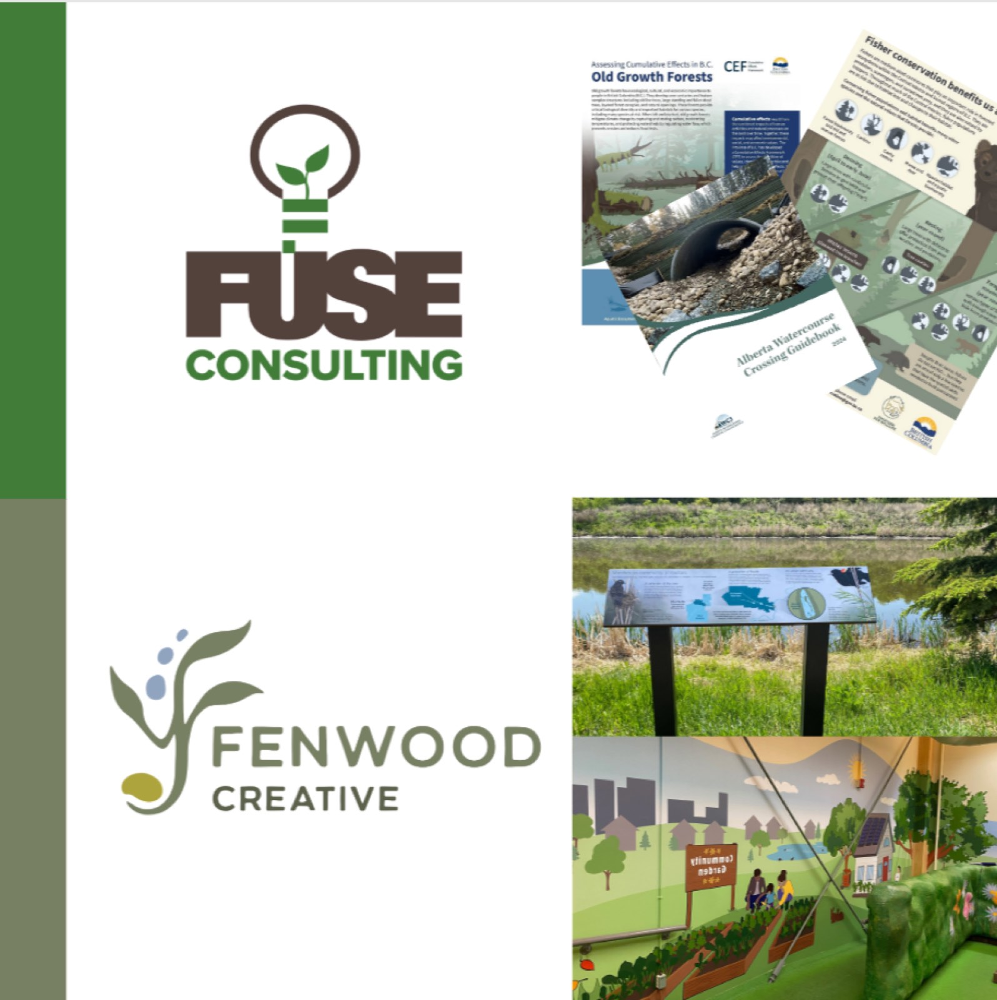
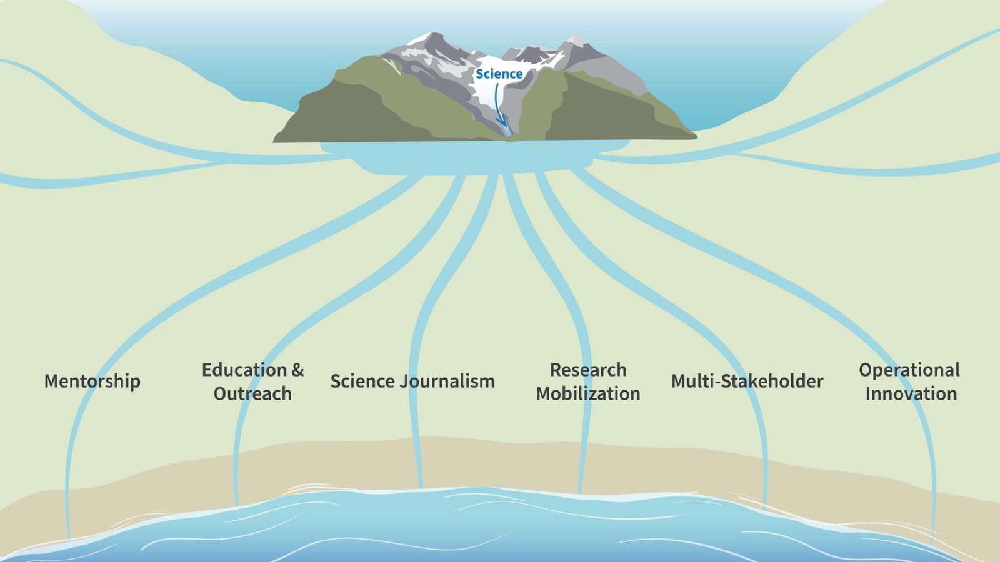
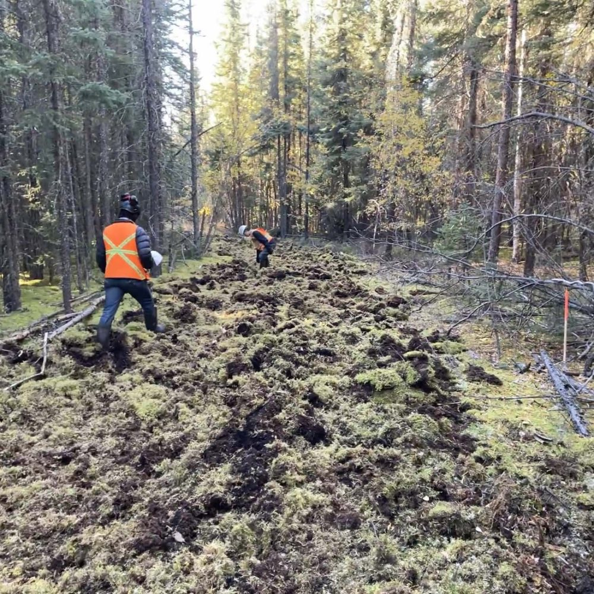
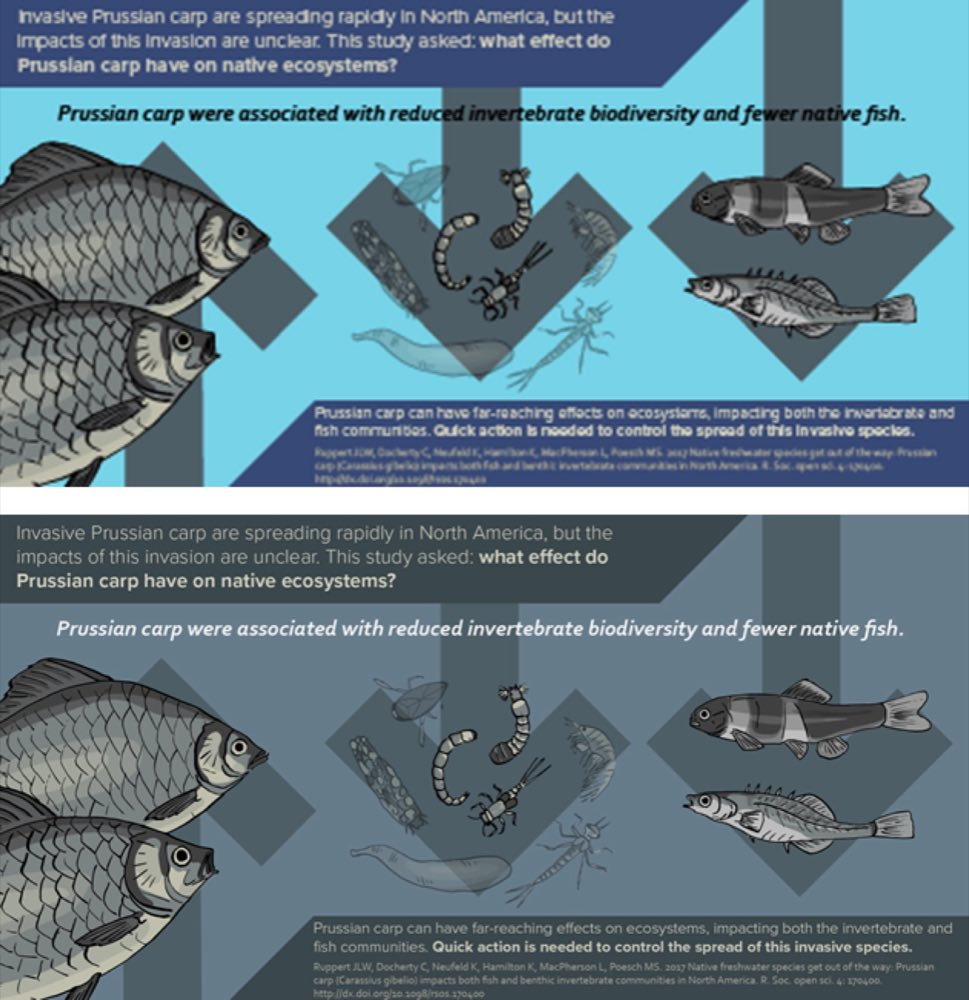
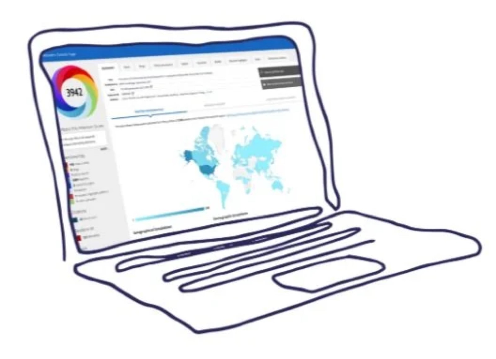
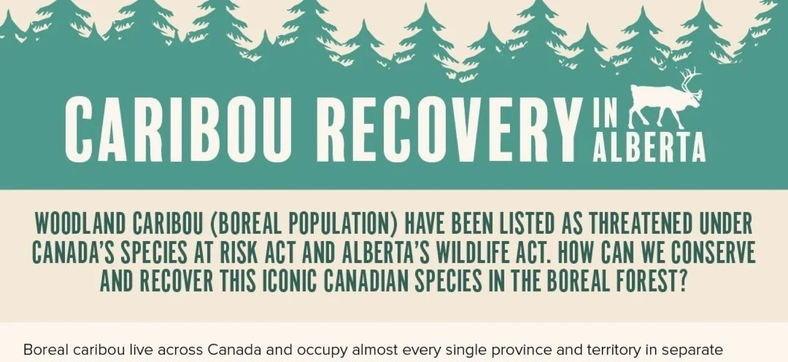

Blogue Knowledge to Practice
Du savoir à la pratique
Des récits et des leçons tirés de notre travail en communication scientifique, depuis 2017.
 Le plus récent
Le plus récentDu conflit à la coexistence
Insister sur les qualités du castor ne touche pas les agriculteurs aux prises avec des cultures inondées, les municipalités confrontées à des ponceaux endommagés ou les gestionnaires de parcs urbains qui voient disparaître du jour au lendemain les arbres qu'ils ont soigneusement cultivés.…
 Amanda Ronnquist
Amanda RonnquistTous les articles
 Nature et faune
Nature et fauneUn buffet printanier : le frai annuel du hareng du Pacifique
Alors que l'hiver commence à relâcher son emprise, à la mi-mars, les plages et les baies de la côte de la Colombie-Britannique se teintent soudain d'un turquoise éclatant, comme pour annoncer le changement de saison. L'ampleur de ce spectacle…
 Allie Unger
Allie Unger
Visuels et infographiesQu’est-ce qui rend un résumé graphique efficace ?
Les résumés graphiques sont un outil de plus en plus courant pour communiquer la recherche. Mais au fait, qu'est-ce qu'un résumé graphique ? Il existe peu de règles strictes (voire aucune) sur ce qui compose un résumé graphique, mais comme un résumé traditionnel…

Nouvelles de FuseFuse confie ses projets de signalisation d’interprétation à Fenwood Creative
Nous sommes ravis d'annoncer que notre travail de signalisation d'interprétation évolue vers un nouveau projet : voici @fenwoodcreative. Détenue et dirigée par notre ancienne directrice de l'éducation et de la vulgarisation, Emma Ausford, Fenwood…
Les lacunes dans les connaissances appellent des Knowledge GAPES : dépasser l’échange des connaissances pour bâtir des systèmes de collecte, d’analyse, de personnalisation et d’échange des connaissances
En près de deux décennies de communication et de vulgarisation scientifiques, on a fait appel à Fuse à de très nombreuses reprises pour cerner des lacunes de connaissances. Traditionnellement, cette demande consiste à réunir des producteurs et des utilisateurs de connaissances pour recueillir…
 Shelagh Pyper
Shelagh Pyper Communication scientifique
Communication scientifiqueAu-delà des faits : le pouvoir de l'émotion et des visuels en communication scientifique
La discipline scientifique se concentre sur la présentation de faits et de données. Toutefois, communiquer efficacement cette science va au-delà du simple partage d'information. Chez Fuse Consulting Ltd., nous faisons le pont entre la science…
Shelagh Pyper Échange des connaissances
Échange des connaissancesCombler l’écart : relier le savoir à la pratique
Dans le monde effréné d'aujourd'hui, où l'information est facilement accessible, il peut être difficile de faire en sorte que le savoir se traduise en action. C'est particulièrement vrai dans des secteurs comme l'agriculture, la foresterie et…

Communication scientifiqueLa communication scientifique : un spectre aux courants multiples
Vous êtes-vous déjà demandé si vous faisiez partie de la communauté de la communication scientifique ?
Shelagh Pyper
Nouvelles de FuseOù en est Fuse aujourd’hui, et où allons-nous ?
Plus de huit ans à donner vie au savoir, et un regard sur l'avenir de Fuse Consulting Ltd.
Shelagh Pyper
Visuels et infographiesCinq étapes pour créer une infographie d’allure professionnelle – regards récents tirés d’un atelier FONCER du CRSNG
Les infographies sont un excellent moyen de faire ressortir votre contenu. La recherche confirme la puissance des outils visuels : les publications sur Twitter qui présentent une nouvelle recherche avec une infographie sont repartagées 8,4 fois plus…

Communication scientifiqueAccroître la visibilité de votre article grâce aux altmetrics
Après de nombreux mois de travail acharné, vous publiez enfin votre manuscrit. Hourra ! Félicitez-vous, vous le méritez. Vos résultats sont enfin accessibles au monde entier, et vous pouvez maintenant vous détendre…

Visuels et infographiesComment rétablirons-nous le caribou boréal en Alberta, et pourquoi ?
Le caribou des bois (population boréale) est inscrit comme espèce menacée au Canada. Les provinces comme l'Alberta doivent désormais élaborer des plans pour aider cette espèce emblématique du Canada à se rétablir et à devenir autosuffisante.…
Aucun article ne correspond à cette recherche. Essayez un autre mot ou affichez-les tous.
Vous avez des connaissances qui doivent rejoindre la pratique ?
Parlez-nous de ce que vous préparez.